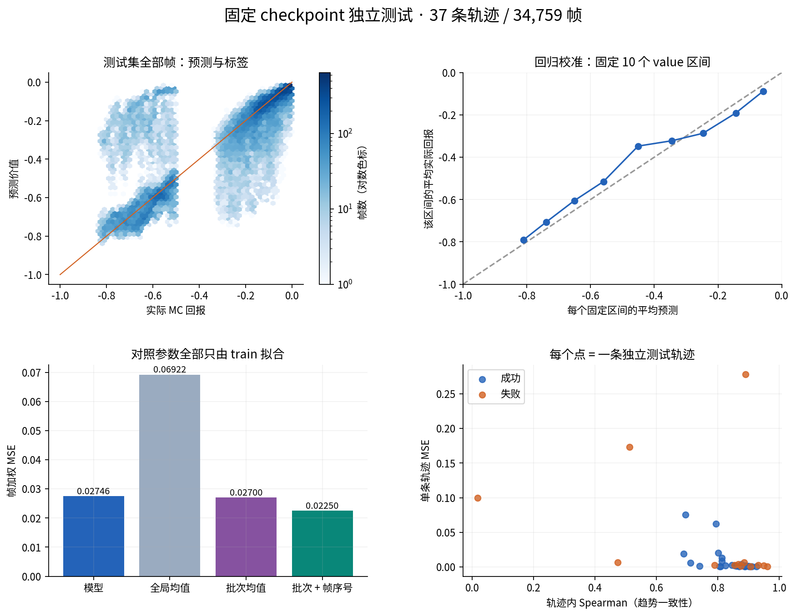
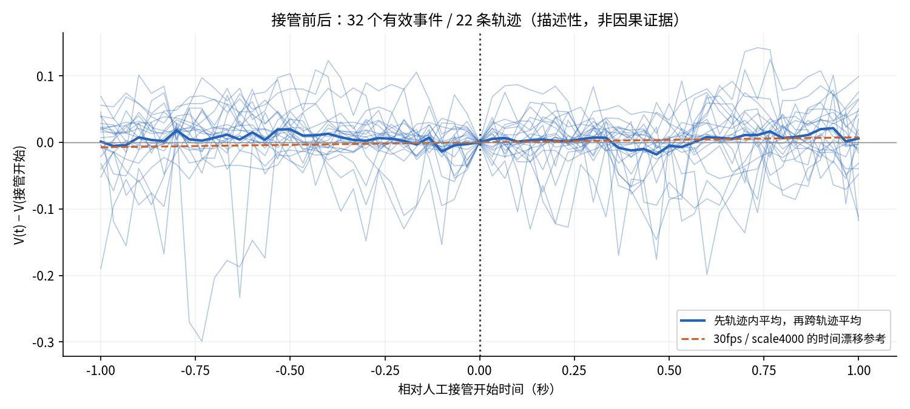

当前 checkpoint · 独立测试报告
第 16 轮模型 · 37 条测试轨迹 · 34,759 帧 · 成功 24 / 失败 13 · cam2
模型未优于批次/时间对照，当前结果不足以证明可靠的视觉进展或优势信号。
本报告固定 checkpoint，不用测试结果选择模型或阈值。人工接管和价值变化的关系仅作描述。
0.02746帧加权 MSE0.1657RMSE0.0950MAE0.02195每条轨迹等权 MSE按 episode 重采样的 MSE 95% 区间：[0.00820, 0.05218]。置信区间只覆盖当前同批次划分，不保证跨日期或跨场景泛化。
总体表现与对照

批次/帧序号对照不读取图像，所有参数仅由训练集拟合；不使用该测试轨迹的最终长度或结局。它用于诊断采集批次与时间线索，不是部署方案。
逐轨迹浏览
按误差从高到低排列，点击轨迹进入同步视频与曲线页面。
人工接管前后

人工接管不一定表示错误发生，结束也不等于恢复成功。现有标签缺少独立的失误/恢复时刻标注，不能把这张图解释为因果关系或恢复检测准确率。